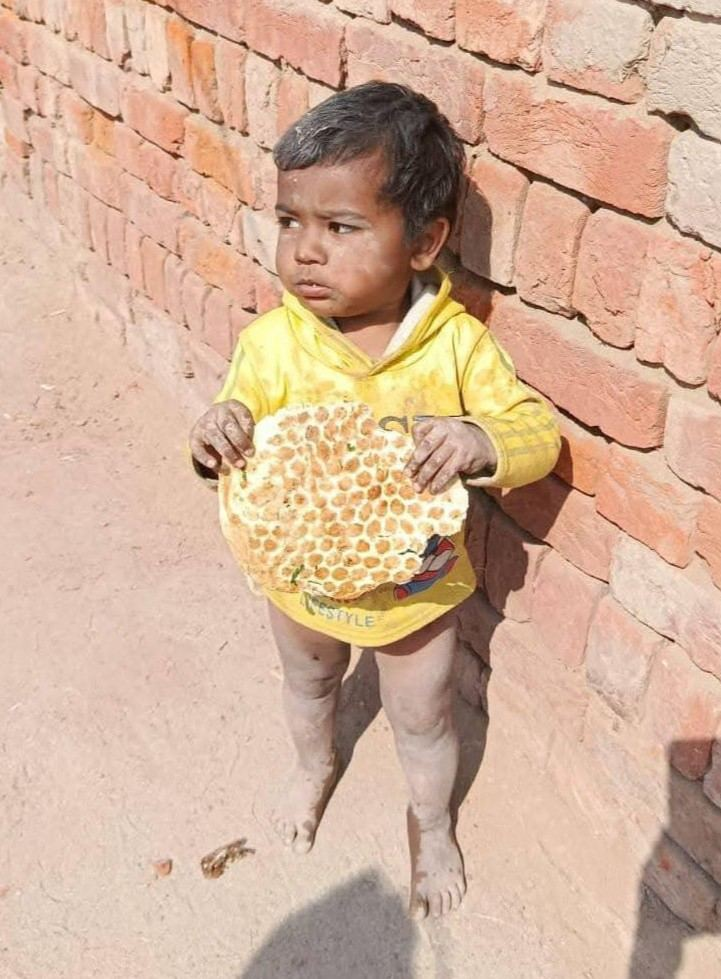
Abandonnés
Des bébés sont rejetés dès la naissance, parfois jetés aux ordures. D'autres sont laissés seuls dans les rues avec la faim et la soif.
Au Pakistan, des enfants abandonnés survivent dans la rue ou sont forcés de travailler dès l'âge de 4 ou 5 ans. Ce sont nos frères et sœurs dans la foi.
Votre don aujourd'hui contribue à leur offrir sécurité, nourriture, éducation et les moyens de bâtir un avenir digne et plein d'espoir.
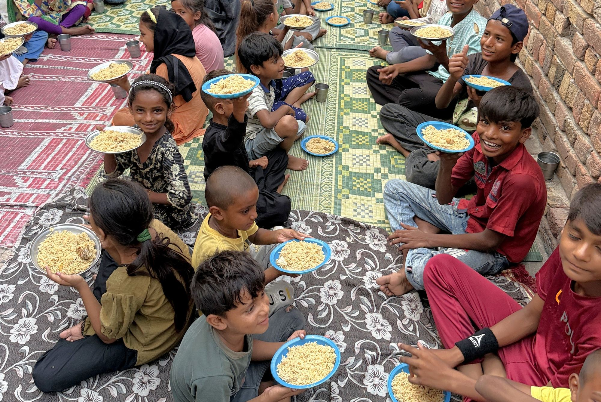
Des orphelins sont abandonnés, maltraités et contraints de mendier ou de travailler dans des conditions inhumaines pour survivre, dans ce pays où les chrétiens sont grandement opprimés.

Des bébés sont rejetés dès la naissance, parfois jetés aux ordures. D'autres sont laissés seuls dans les rues avec la faim et la soif.
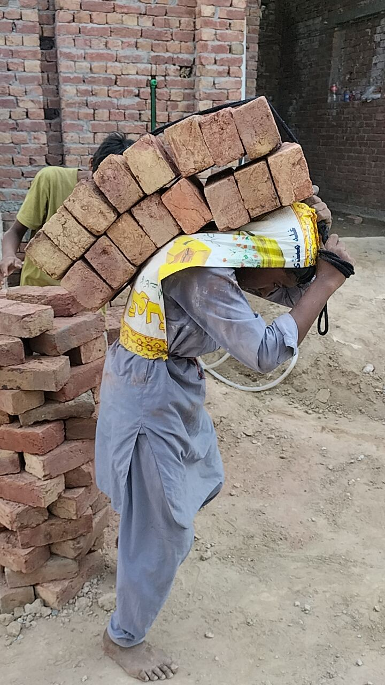
Captifs dans des travaux forcés, sous des chaleurs extrêmes de 45 °C. Ce garçon porte 120 lb de briques sur son dos, nu-pieds, et il est frappé chaque jour.
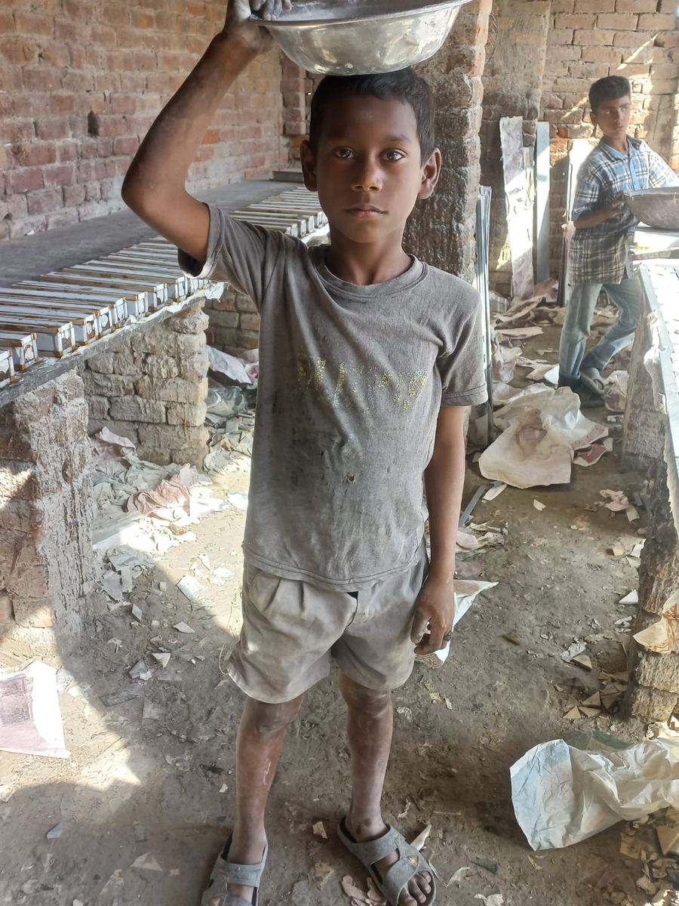
Capturés pour être exploités, ils travaillent sans jamais pouvoir s'en sortir ni aller à l'école.
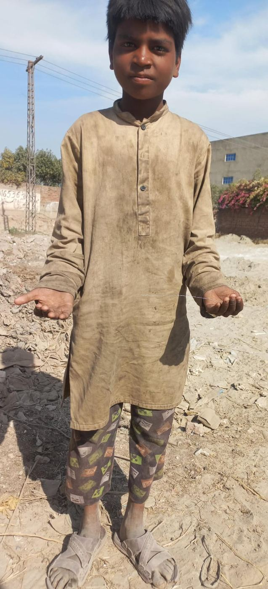
Pour survivre, ils doivent mendier ou chercher de la nourriture dans les poubelles. Exposés à la violence, aux gangs et aux abus.
Ces petits sont nos frères et sœurs dans la foi. Ils connaissent la violence, la peur et l'abandon.
Avec amour et compassion, aidez-nous à leur offrir la nourriture nécessaire, un refuge sécuritaire, de la tendresse et l'espoir dont ils ont tant besoin.
🤍 Je veux aider un enfant« Rendez justice au faible et à l'orphelin, faites droit au malheureux et au pauvre, sauvez le misérable et l'indigent, délivrez-les de la main des méchants. »Psaume 82.3-4
En 2025, quatre chrétiens de différentes régions du Québec ont répondu à un même appel de Dieu : aider 40 orphelins persécutés au Pakistan, qu'un chrétien pakistanais avait recueillis et nourrissait à bout de bras malgré sa propre persécution.
Dieu appelait le Québec à se lever pour ces enfants. C'est ainsi qu'est né l'organisme à but non lucratif Mains Ensemble.
Notre équipe est 100 % bénévole. Vos dons servent directement à soutenir les orphelins au Pakistan, grâce à nos deux missionnaires natifs, avec qui nous sommes en contact chaque semaine et de qui nous recevons des rapports financiers avec preuves, photos et vidéos.
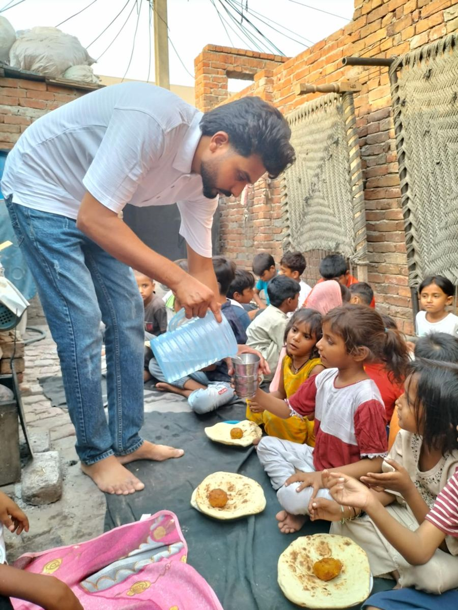

Président
Fort de 40 ans de leadership pastoral et social (ex-directeur de l'Armée du Salut, fondateur d'un centre de thérapie et d'organisations communautaires), auteur et conférencier.
Secrétaire et directrice générale
Ex-administratrice, ancienne nutritionniste, ex-animatrice de La Parole Vivante à Télé-Mag et forte d'une mission humanitaire au Niger.

Trésorier
Cofondateur de projets agricoles collectifs (Terra Sativa, Marché Public de Deschambault) et responsable du bâtiment et du volet écologique à La Villa de Brome.

Cofondatrice
Ex-PDG de Côté Cuir.
Secourir et protéger les orphelins chrétiens persécutés ainsi que les enfants abandonnés, maltraités ou exploités, en leur offrant sécurité, nourriture, éducation et les outils nécessaires pour bâtir un avenir autonome, dans la dignité et l'espoir.
Nous soutenons également les chrétiens persécutés et les veuves les plus vulnérables par une aide humanitaire, des outils et une éducation qui favorisent leur autonomie et leur pouvoir d'agir.
« La religion pure et sans tache, devant Dieu notre Père, consiste à visiter les orphelins et les veuves dans leurs afflictions, et à se préserver des souillures du monde. »Jacques 1.27
Abandonnés dans la rue : la faim, la soif, la chaleur extrême.
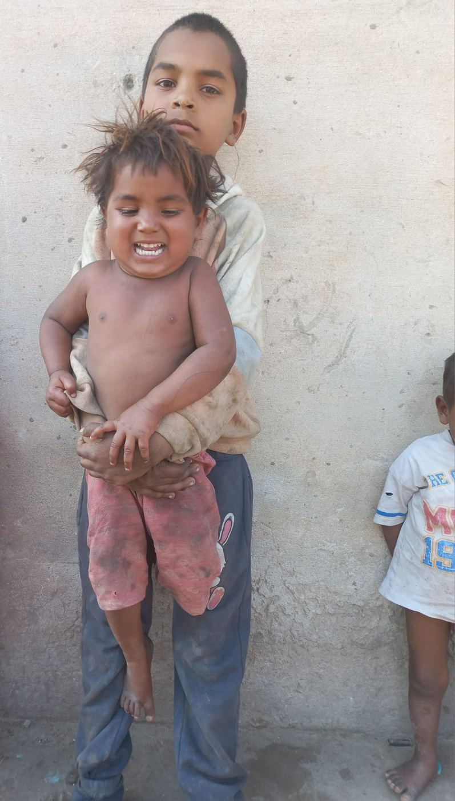
Nourris, aimés, éduqués.


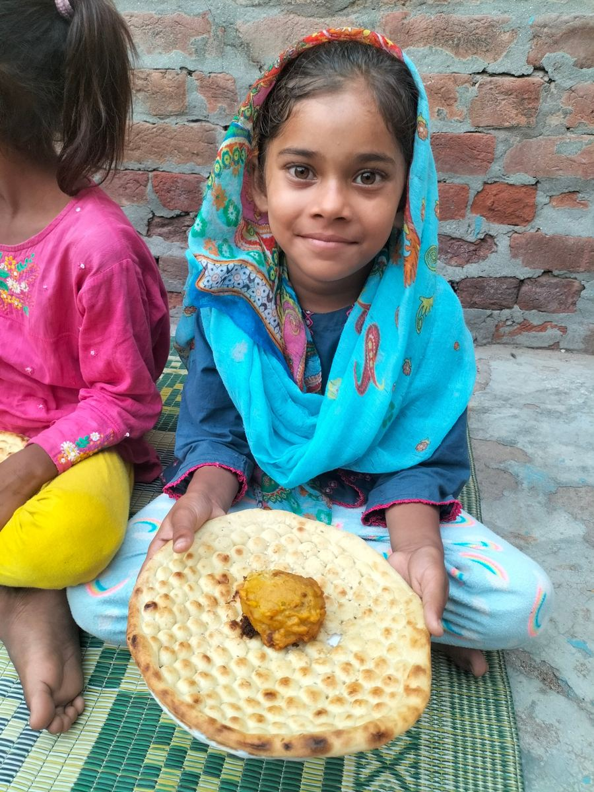
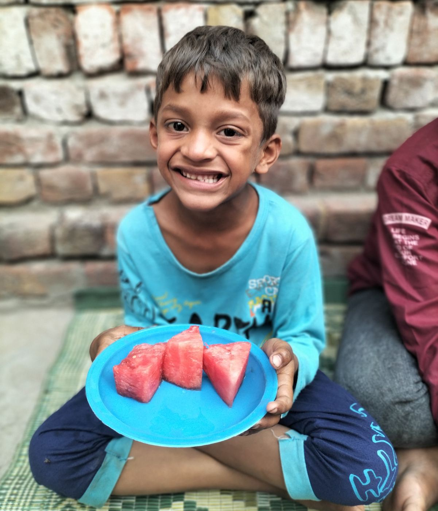


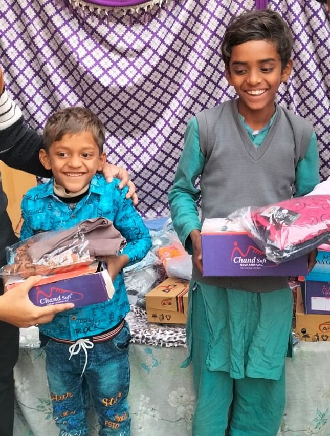


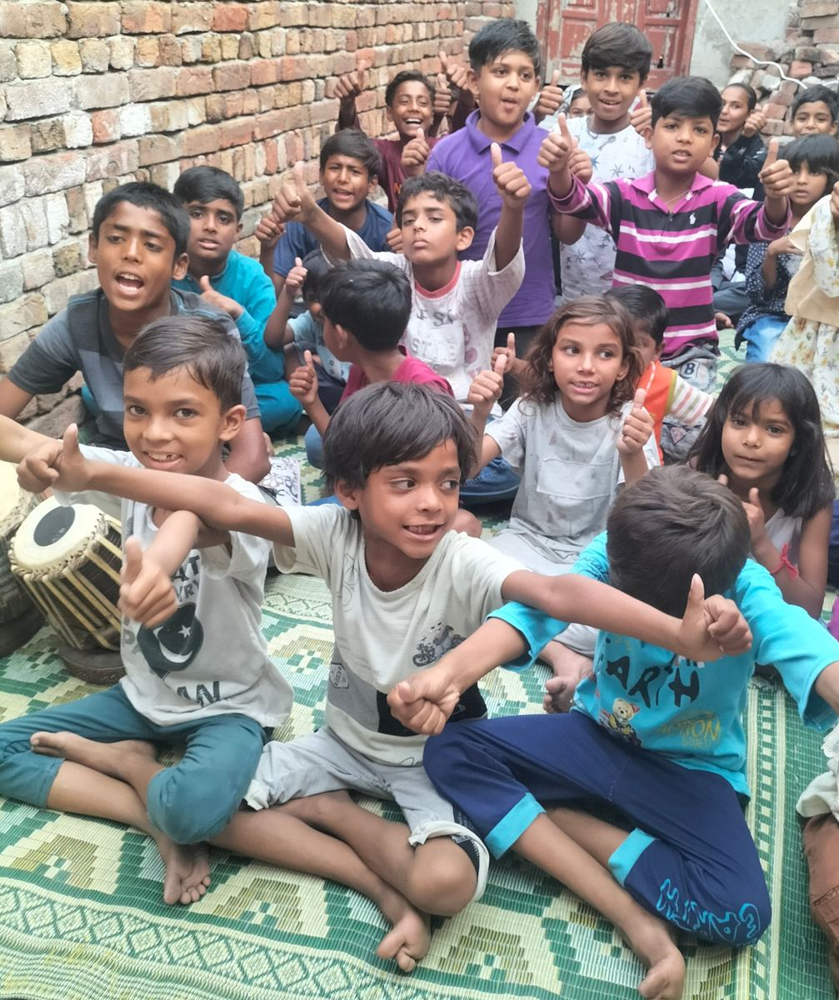
La vidéo ne s'affiche pas ? Regardez-la directement sur YouTube.
« Car j'ai eu faim, et vous m'avez donné à manger ; j'ai eu soif, et vous m'avez donné à boire ; j'étais étranger, et vous m'avez recueilli ; j'étais nu, et vous m'avez vêtu. Toutes les fois que vous avez fait ces choses à l'un de ces plus petits de mes frères, c'est à moi que vous les avez faites. » Matthieu 25.35-36, 40
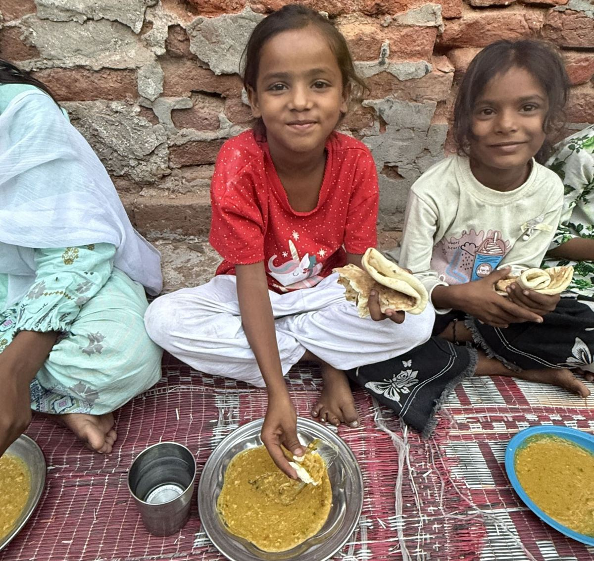
50 $ par mois couvrent tous les besoins d'un enfant : trois repas par jour, des vêtements, des produits d'hygiène, la scolarité et un toit. Surtout, cet enfant est sauvé de la rue, de la faim, des abus et du travail forcé.
Si un grand nombre d'entre nous donnent le montant que Dieu a mis sur leur cœur, nous pourrons bâtir le Refuge de l'Espoir et sauver encore plus d'enfants.
Le formulaire ne s'affiche pas ? Donnez directement ici.
Organisme à but non lucratif canadien. Les dons ne sont pas déductibles d'impôt.
Aujourd'hui, les orphelins accueillis vivent dans des conditions de grande précarité :
Il est urgent d'avoir un bâtiment adapté. Faute de place, nous ne pouvons plus recueillir d'autres orphelins en danger et leur offrir un refuge sûr.


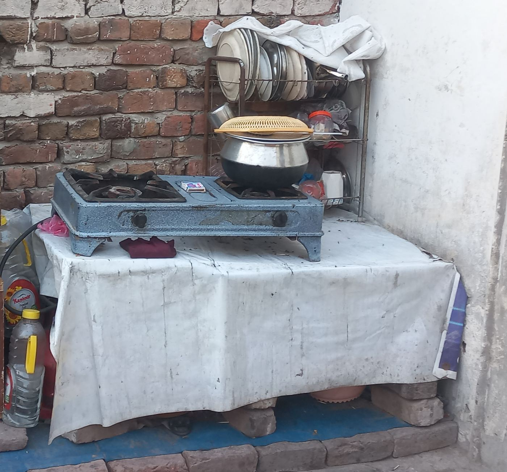
Au fil des ans, des centaines d'enfants seront sauvés grâce à ce refuge.
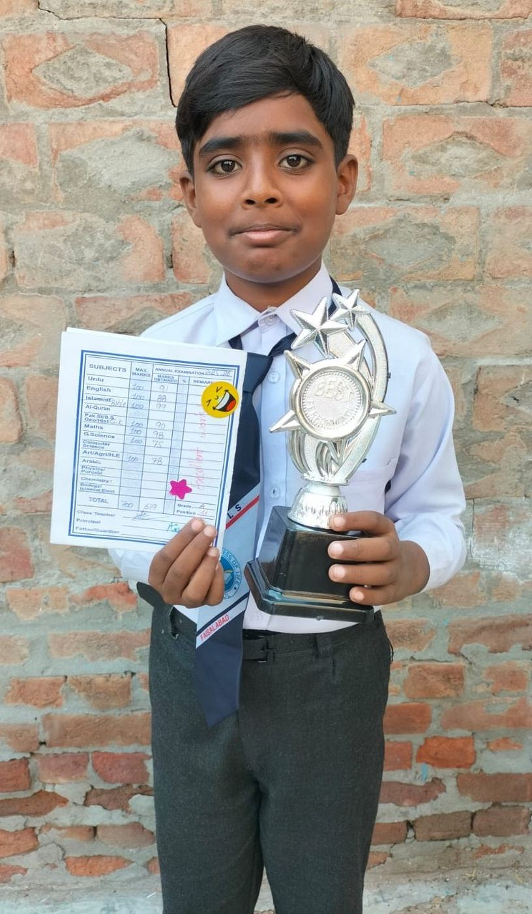
À 5 ans, Nehemia a été secouru par notre missionnaire. Il avait été abandonné dans la rue avec son frère et sa sœur de 2 et 3 ans. Il fouillait les poubelles à l'entrée d'un hôpital, dans la faim, la soif et la peur.
Aujourd'hui, Nehemia a 10 ans. Il est aimé, nourri et vêtu. Il est premier de sa classe et a reçu un trophée Méritas.
Aidez-nous à bâtir le Refuge de l'Espoir pour héberger Nehemia et sauver d'autres enfants comme lui.
🤍 Je donne pour bâtir le RefugeNous ne nous contentons pas de parler : nous sommes sur le terrain par des interventions directes et immédiatement bienfaisantes pour les veuves et les familles chrétiennes les plus démunies.

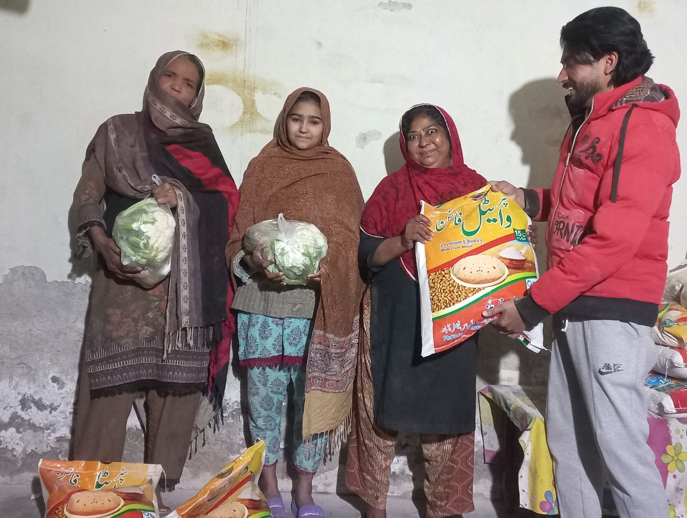


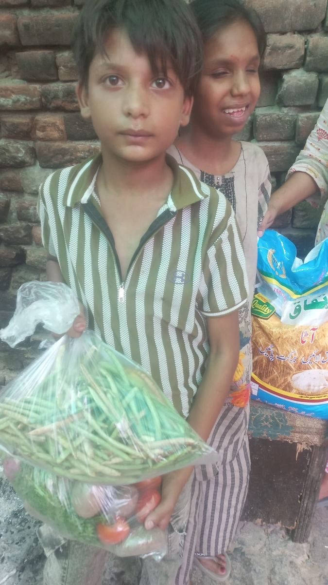


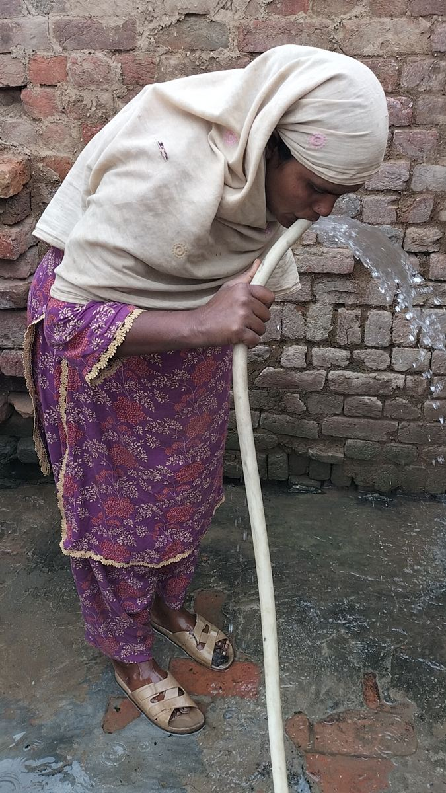
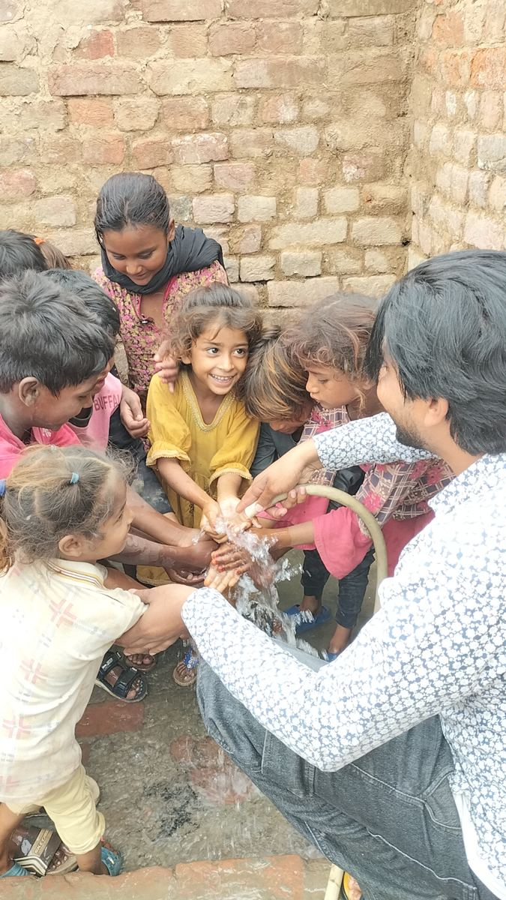
La vidéo ne s'affiche pas ? Regardez-la directement sur YouTube.
Notre équipe est entièrement bénévole. Vos dons servent ainsi directement sur le terrain, au Pakistan, auprès des plus vulnérables.